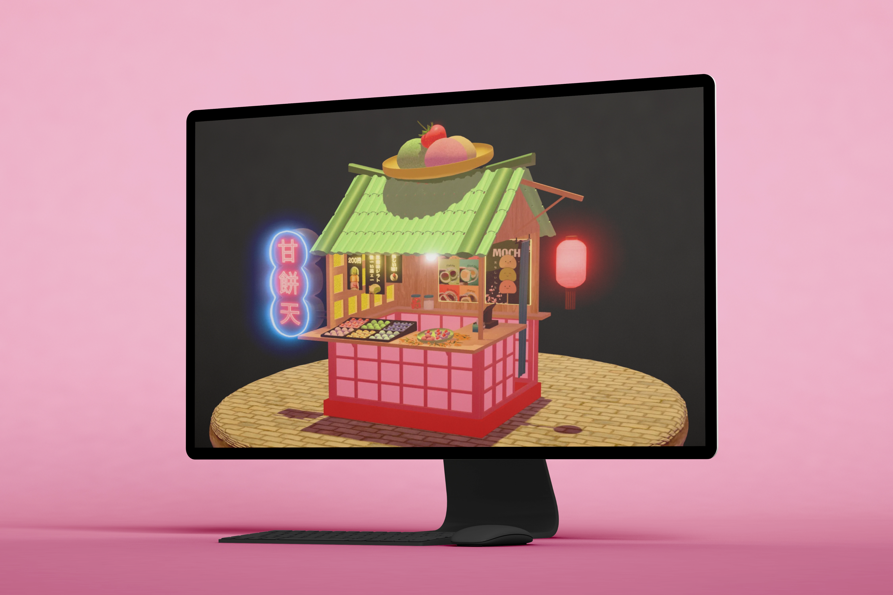
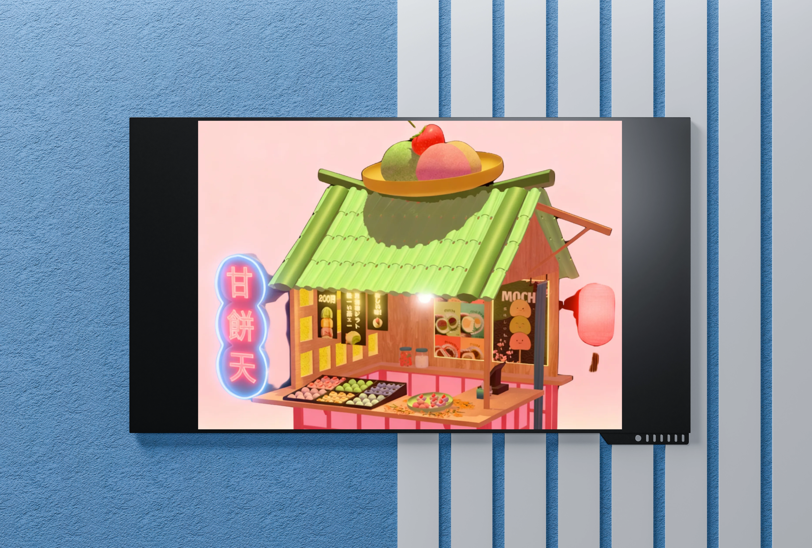
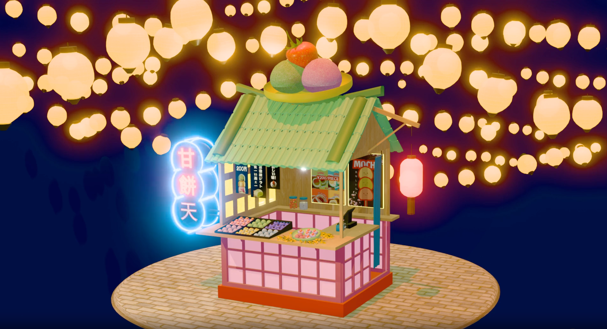

Mochi Foodkiosk
Een 3D streetfood kiosk in Blender, geïnspireerd door Japanse mochi. Het project focust op branding, 3D-modellering en sfeer.
Voor mijn 3D-cursus ontwierp en modelleerde ik een foodkiosk rond mochi in Blender. Het doel was een visueel aantrekkelijke en thematische kiosk te maken waarbij branding, materiaalgebruik en licht samenkomen in één concept.
Dit project liet me experimenteren met 3D-branding: hoe materialen, vormen en sfeer een merkidentiteit kunnen dragen. Het combineren van speelse Japanse invloeden met functioneel design gaf me nieuwe inzichten in hoe 3D en storytelling elkaar versterken.


Daarnaast verbeterde ik mijn vaardigheden in rendering en belichting, en leerde ik hoe een sterk visueel concept een merk op zichzelf kan dragen.

Back to projects overview
Back